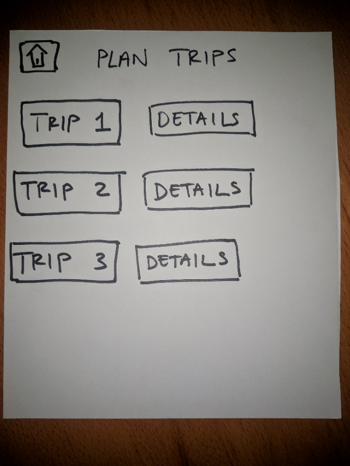
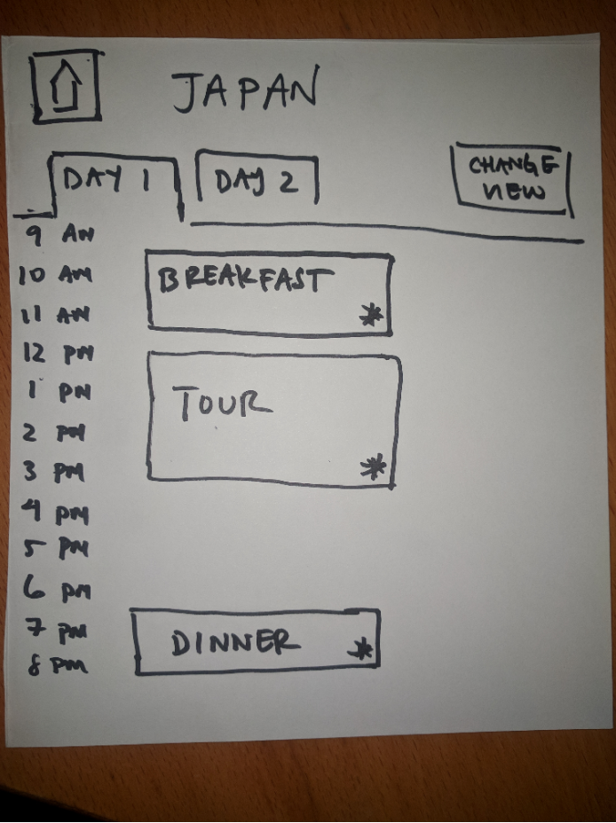
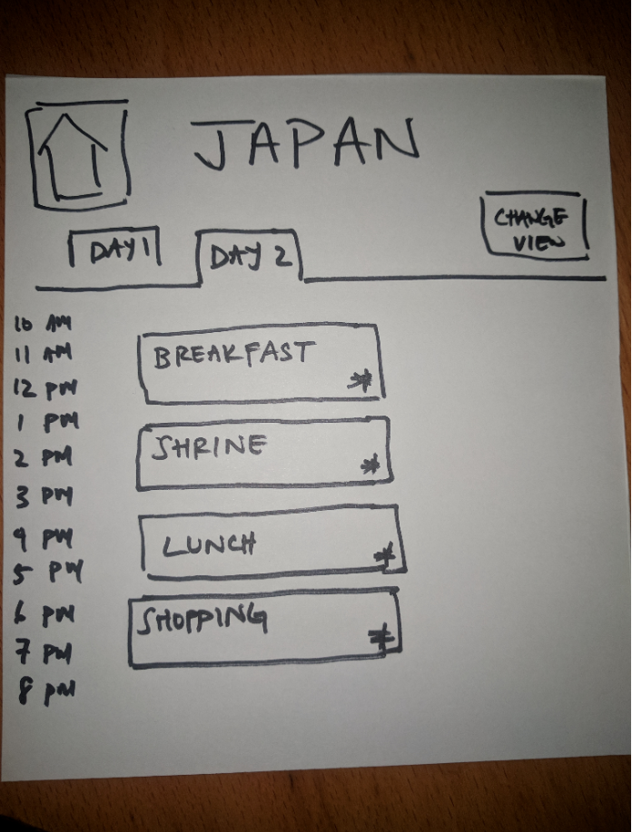

TravelWiz
TravelWiz is a web application that was created to lessen the stress of planning for your vacation. The design of TravelWiz is to simplify the scheduling creation and planning process. This is done through the idea of “Presenting Information”; the focus on this group project. Thus TravelWiz was created with such concepts in mind, being mindful of how and what types of information are being displayed to the user allows for less stress and gives users confidence in planning a great trip.
Point Of View
When a vacation is decided on, there is a lot of preparation that happened before the trip itself. First would be figuring out a place to stay and mode of transportation. Then comes the most difficult part, figuring out what activities to do and creating a schedule to fit it. Creating a schedule can be difficult as people tend to focus on one aspects when traveling like sightseeing and often times forget or don’t know what else the place they are visiting has to offer, like local cuisines or activities special to the area. Missing out on these activities and focusing on only one aspect can hinder the complete vacation experience.
Storyboard
Here are three scenarios that displays how useful and effective the app can be in certain situations, along with an overall look of the type of users expected to use the app.
First Storyboard

The user just planned out their vacation, but doesn’t have a plan on what to do. By using the app the user is able to see a variety of options available to them that they didn’t know about before. Knowing what is available, the user creates a to-do list and enjoy the vacation.
Second Storyboard
The user is researching about activities available at the vacation area the user just booked. After many days of researching visiting many websites and using plenty of apps the user is frustrated and annoyed since there isn’t a simpler way. Getting recommended by a friend the user uses the app and completes their research done in a few hours.
Third Storyboard

The user is researching about activities available at the vacation area the user just booked. After many days of researching visiting many websites and using plenty of apps the user is frustrated and annoyed since there isn’t a simpler way. Getting recommended by a friend the user uses the app and completes their research done in a few hours.
Storyboard
Here are three scenarios that displays how useful and effective the app can be in certain situations, along with an overall look of the type of users expected to use the app.
First Scenario
The user just planned out their vacation, but doesn’t have a plan on what to do. By using the app the user is able to see a variety of options available to them that they didn’t know about before. Knowing what is available, the user creates a to-do list and enjoy the vacation.
Second Scenario
The user is researching about activities available at the vacation area the user just booked. After many days of researching visiting many websites and using plenty of apps the user is frustrated and annoyed since there isn’t a simpler way. Getting recommended by a friend the user uses the app and completes their research done in a few hours.
Third Storyboard
The user is researching about activities available at the vacation area the user just booked. After many days of researching visiting many websites and using plenty of apps the user is frustrated and annoyed since there isn’t a simpler way. Getting recommended by a friend the user uses the app and completes their research done in a few hours.
Prototypes
Below are paper various prototypes of the design of the app. We first started with paper prototypes as it makes user research testing easier for seeing how users would interact with the main functions of the app. After the main design and functions are finalized, wireframes are created for visuals using Sketch. Since the focus of the app is about Presenting Information, things that were focused on is how to give the user important information quickly. Some things that were thought of and focused on is sectioning certain activities into different categories, as for what information to mainly present includes, a quick summary of the activity, and more importantly average hour spent for each activities and average prices, which are important for travelers as it helps knowing how long an activity would usually take and how much money they would be spending.
Prototype 1: Activities List [post pictures of prototype 1]




Prototype 2: Schedule Viewer [post pictures of prototype 2]

Wireframes: Here are some hi-fi prototypes, that maps out the general design of the app. [post pictures of wireframes]
User Testing
The app was created using HTML, CSS, Javascript and a little bit of node.js, along with using Heroku as a platform to host the app.
As the main functions of the app was completed, it was ready for research through user testing and feedback. Testing was conducted in person, by asking users to use the app, and watching how they interact with the app; seeing how they interact with buttons, along with asking the user tested to speak out what they are thinking, allowing insight on how certain placements can influence what they are thinking or doing. After using the app there are follow up questions, which are mostly general; what they thought of the app overall and if it’s something they would use if available, and some specific; what they thought about a certain function or button compared to this other function. A/B Testing was also conducted to test if users prefer a certain design over the other, for example make a submit button cover the button of the phone screen, or sized in a box shape on the left side of the screen. [post pictures of testing]
Results
Through feedback from testing there are various changes that were made. Some of it being a way for users to go back to the top of the page quickly, thus we added an arrow pointing up on the side that instantly brings them to the top of the page when tapped. Another change was making the submit button static at the bottom of the screen, allowing users to submit their options without having to scroll down to the bottom of the page. One of the more bigger changes is in the schedule page, were originally it would list the activities users selected, and the change made was by color coding each activities based on the section or group the activity was in (food, sightseeing, shopping), giving users instant feedback on what their overall schedule would be.
Improvements or changes if I had more time.
There are some things that were planned out that wasn’t in the final product due to lack of time or inability to create such task. One main thing that I wanted to do but wasn’t able to was the ability for schedule to sustain its information rather than deleting the information once the user left the page. Another main thing is a redesign of the schedule page, where the user can see their schedule for the day in a more calendar format; having time of hour listed from top to bottom on the left (ex 8am, 9am), then a vertical box that covers the timeframe of a particular activity for that day and time. This allowing more visuals for users to see length of a particular activity would take for the day.
App
Here is a link to the web app.
If possible, use the app with a mobile device or try it in mobile mode, as it was create for mobile use.
Group Members: Vincent Pham, Phan Huynh